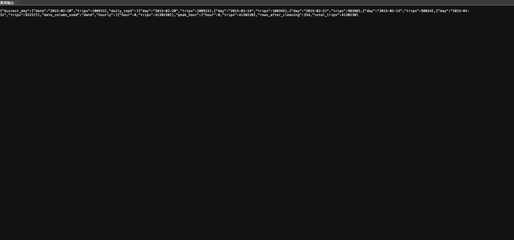
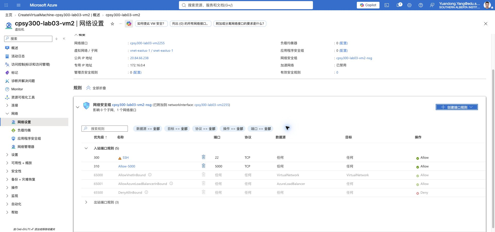
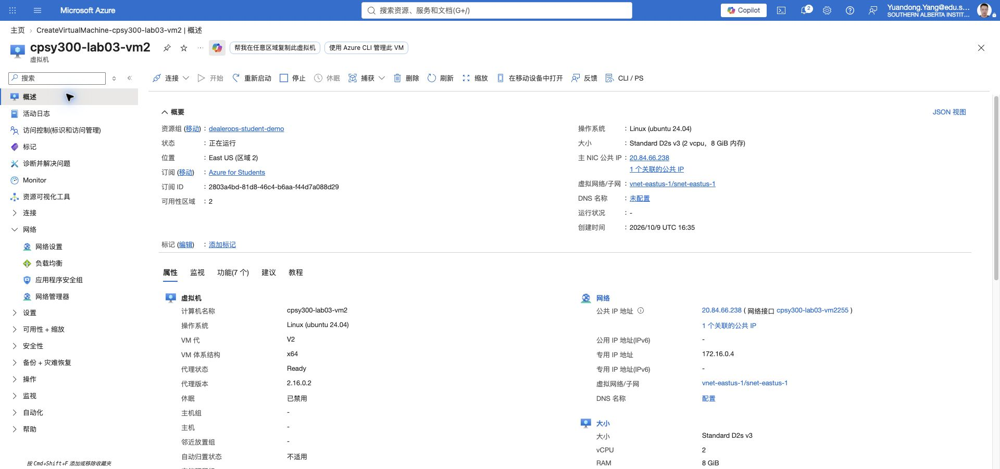
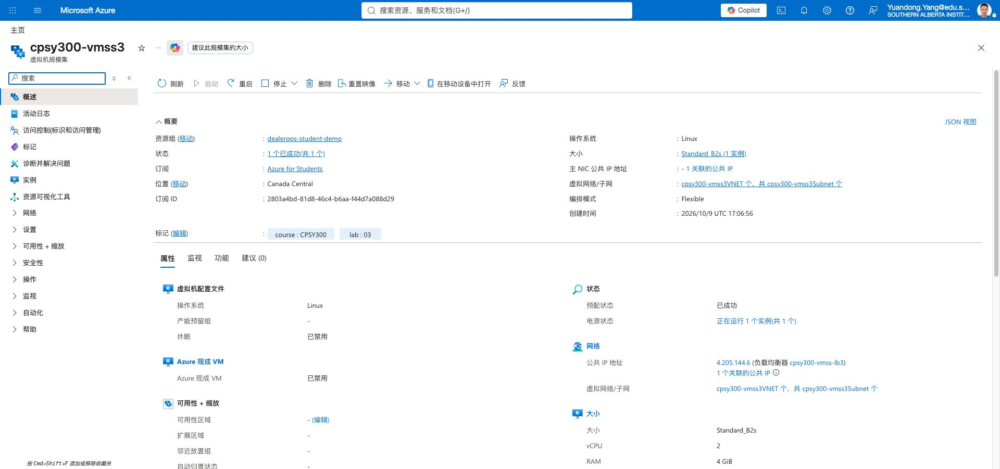
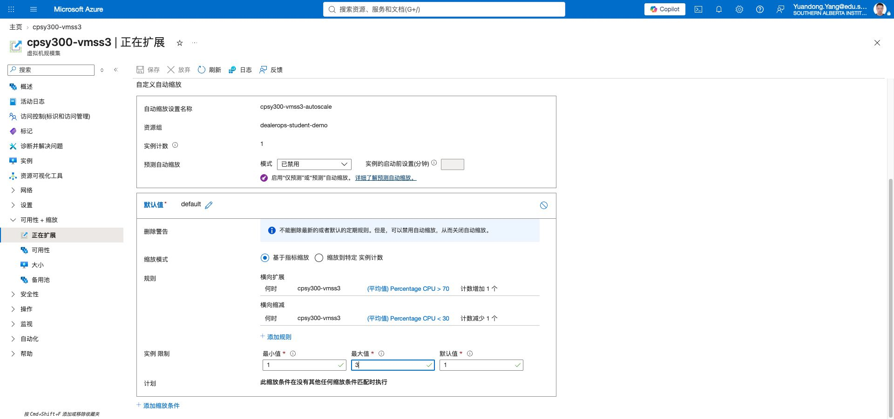
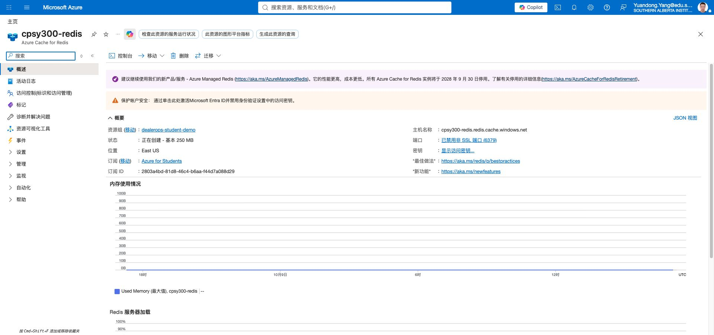

CPSY 300 Lab 03
This report provides the application code, data preprocessing, Docker configuration, JMeter test plan, and Redis caching implementation required by the lab. The official CSV is aggregated by date and dispatching base, so trips is used as the weight instead of treating each row as one trip.
Executive summary
The application runs on 0.0.0.0:5000 and provides health, prediction, and analysis endpoints. It runs without Redis and returns "source":"cache" for repeated timestamps when Redis is available. Docker uses gunicorn, while JMeter is configured for 500 users, a 60-second ramp-up, and five loops per user.
1. Data preprocessing and traffic analysis · 10 marks
1.1 Cleaning and feature extraction · 5 marks
The input contains 354 rows and four raw fields: dispatching_base_number, date, active_vehicles, and trips. The application removes missing and duplicate records, supports either the handout's Date/Time field or the actual file's date field, and creates Hour, Day, DayOfWeek, IsWeekend, and TripWeight.
1.2 Aggregation and visualization · 5 marks
| Metric | Result | Interpretation |
|---|---|---|
| Rows after cleaning | 354 | No missing or duplicate rows in the official aggregate file |
| Total weighted trips | 4,130,230 | Sum of the trips field, not row count |
| Busiest day | 2015-02-20 · 100,915 | All dispatching bases aggregated by day |
| Largest base | B02764 · 1,914,449 | All dates aggregated by base |
http://localhost:5000/analysis and insert the daily/hourly bar chart and day-of-week × hour heatmap. The official file has day-level granularity only; label the hourly view “day-level source / hour feature unavailable,” or rerun with the event-level CSV supplied by the course.2. JMeter traffic simulation · 5 marks
jmeter_test_plan.jmx includes a Thread Group, CSV Data Set, HTTP GET sampler, Summary Report, and View Results Tree. It uses 500 users (change to 1000 if required), a 60-second ramp-up, and five loops. Because the actual CSV uses date, the variables are base,timestamp,active_vehicles,trips; the request is /predict_traffic?timestamp=${timestamp}.
screenshots/jmeter-summary.png. The real run completed 2,500 samples with 0 errors, 2.04 ms average response time, and 42.15 transactions/s. The test-plan tree remains a source-file item, not a fabricated screenshot.3. Dockerization · 10 marks
3.1 Dockerfile · 5 marks
Uses a Python slim image, pinned dependencies, gunicorn, port 5000, and a reproducible start command.
3.2 Local verification · 5 marks
The health endpoint returns status: ok; the prediction endpoint returns timestamp, predicted trips, observed daily trips, and source.
4. Azure VM and VMSS · 10 marks
4.1 Azure VM deployment · 5 marks
Create an Ubuntu VM in the Azure Sandbox and allow TCP 5000 in the NSG. After pushing the image, run:
4.2 VMSS autoscaling · 5 marks
Configure a VMSS startup script to pull the same image and expose port 5000. Configure CPU above 70% to scale out and CPU below 30% to scale in, with an Azure Load Balancer. Use the JMeter plan to generate load and record instance-count changes.
cpsy300-vmss3 is provisioned successfully with 1 instance, load balancer, minimum 1, maximum 3, CPU scale-out above 70%, and scale-in below 30%.5. Redis caching · 10 marks
5.1 Local Redis · 5 marks
docker-compose.yml starts Redis and the API together. The API uses a SHA-256 timestamp key with a default TTL of 3600 seconds; the first request computes a result and the second returns the cached result.
compute, the second returned cache, and a Redis key was present in the actual terminal output. No composite screenshot is claimed for this item.5.2 Azure Cache for Redis · 5 marks
Copy the Azure Redis hostname, SSL port 6380, and primary key into an environment variable. Never commit the real key to this report or Docker image.
6. Monitoring and cleanup · 10 marks
6.1 Before/after comparison · 5 marks
Use the same time window in Azure Monitor to compare average response time, CPU usage, and autoscale actions before and after caching. Use JMeter throughput and error percentage as supporting evidence.
| Metric | Before caching | After caching | Expected direction |
|---|---|---|---|
| Response time | Insert Azure value | Insert Azure value | Lower |
| CPU usage | Insert Azure value | Insert Azure value | Lower |
| Scale-out actions | Insert Azure value | Insert Azure value | Fewer |
6.2 Cleanup · 5 marks
Submission checklist
- report.html
- app.py, Dockerfile, requirements.txt, and docker-compose.yml
- jmeter_test_plan.jmx
- Uber-Jan-Feb-FOIL.csv
- All rubric screenshots with a visible date and time
- Place everything and the screenshots folder into one ZIP; print this HTML to PDF if required
Generated for CPSY 300 Lab 03 ·
Evidence screenshots
Live analysis endpoint

Captured through an SSH tunnel to the Azure VM application.
Original evidence captures
D1 — Azure NSG

D1 — Running Azure VM

D3 — VM Scale Set

D3 — Autoscale configuration

E3 — Azure Redis provisioning

B2 — JMeter dashboard